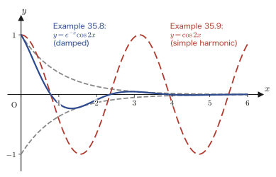

Chapter 35Fundamentals of Second-Order Linear Homogeneous Differential Equations
In the preceding chapters, we learned procedures for solving first-order differential equations by sorting them into several types: separable equations, homogeneous-type equations, first-order linear differential equations, exact differential equations, and so on. The general solution of a first-order differential equation contained exactly one integration constant. For example, the general solution of the first-order linear homogeneous differential equation $y'+P(x)y=0$ is $y=Ce^{-\int P(x)\dd x}$, which contains just one arbitrary constant $C$ (Chapter 33).
However, the motion of a weight attached to a spring, the current flowing in an electric circuit, the vibrations of a string or a drum—many such phenomena must be described in a way that takes into account even “how the velocity changes,” and so they are expressed by second-order differential equations, which contain the term $y''$, the second derivative of the unknown function. And the general solution of a second-order differential equation contains exactly two arbitrary constants. Why two? In what form do those two arbitrary constants appear in the solution? And how does the character of the solutions change depending on whether the right-hand side is 0 (homogeneous or nonhomogeneous)?
In this chapter, taking the second-order linear homogeneous differential equation $y''+P(x)y'+Q(x)y=0$ as the main subject, we confirm the following, in the order in which the original notes present them: (1) that the general solution of a nonhomogeneous equation can be written as the sum of “the general solution of the homogeneous equation” and “a particular solution of the nonhomogeneous equation”; (2) why the general solution of the homogeneous equation takes the form of a linear combination $Y=C_1y_1+C_2y_2$ of two “fundamental solutions”; (3) the condition of “linear independence” that these two fundamental solutions must satisfy, and the tool for testing it, called the Wronskian; and (4) the concrete procedure for actually finding fundamental solutions when the coefficients $a,b$ are constants. The result obtained in the last item, (4), will serve directly as the foundation when, in the next chapter, we follow simple harmonic motion (the motion of a spring) with equations.
- The meanings of the terms nonhomogeneous equation, homogeneous equation, general solution, particular solution, and fundamental solution, and the proof that “the general solution of ① = the general solution of ② + a particular solution of ①”
- Why the general solution of a homogeneous equation is a linear combination of fundamental solutions, $Y=C_1y_1+C_2y_2$ (linearity, and the viewpoint of a “vector space”)
- The definition of the Wronskian $W(y_1,y_2)=\begin{vmatrix}y_1 & y_2\\ y_1' & y_2'\end{vmatrix}$, and the proof that if $W\neq0$ then $y_1,y_2$ are linearly independent
- The proof that a second-order linear homogeneous differential equation has, in general, exactly two linearly independent fundamental solutions (not three or more)
- The procedure of setting $y=e^{\lambda x}$ for the fundamental solutions in the constant-coefficient case to derive the characteristic equation $\lambda^2+a\lambda+b=0$
- How the form of the fundamental solutions splits into three cases (distinct real roots, a repeated root, complex roots) according to the sign of the discriminant $D=a^2-4b$, and the general solution in each case
Source notes: Yasuhide Mochizuki, Mathematics Notes: Ordinary Differential Equations, pp. 17–23.
35.1 Structure of the General Solutions of Nonhomogeneous and Homogeneous Equations
As we confirmed in Chapter 33, Section 33.1, differential equations are classified as “$n$th-order” according to the largest number of times the unknown function $y$ has been differentiated in any derivative that appears. So far we have dealt only with first-order differential equations, in which nothing beyond $y'$ appears; from this chapter on we consider second-order differential equations, in which $y''$ ($y$ differentiated twice with respect to $x$) appears. Furthermore, when an equation can be written using only linear expressions in $y,y',y''$ (forms in which nothing is squared or multiplied together within a single term), the differential equation is said to be linear. Calling an equation whose right-hand side is 0 homogeneous and one whose right-hand side is not 0 nonhomogeneous follows the same convention as in the first-order case in Chapter 33.
Definition 35.1: Second-order linear differential equations, and homogeneous and nonhomogeneous equations
Let $P(x),Q(x),R(x)$ be functions of $x$ that are continuous (on the interval under consideration).
$$ \begin{cases} y''+P(x)y'+Q(x)y=R(x) & \cdots\text{① (nonhomogeneous equation)} \\ y''+P(x)y'+Q(x)y=0 & \cdots\text{② (homogeneous equation)} \end{cases} $$A second-order differential equation such as ①, in which the unknown function $y$ and its derivatives $y',y''$ are linked only through linear expressions, is called a second-order linear differential equation. When the right-hand side $R(x)$ is identically 0 (in the case of the form ②), the equation is called homogeneous; otherwise (in the case of the form ①), it is called nonhomogeneous. When $P(x),Q(x)$ are constants (independent of $x$), the equation is called an equation with constant coefficients (this case is treated from Section 35.4 on). We call ② the corresponding homogeneous equation of ①.
The equation ② (the corresponding homogeneous equation) is the second-order counterpart of the associated homogeneous equation (Definition 33.4) that we introduced in Chapter 33 for first-order linear differential equations—from here on, this book will use the name “corresponding homogeneous equation” uniformly for second-order and higher-order homogeneous equations as well.
Let $y$ denote the general solution of ①, $y_0$ a particular solution of ① (one of the infinitely many solutions—a specific one that has actually been found), and $Y$ the general solution of ②. A “general solution” is an expression that contains arbitrary constants (constants such as $C_1,C_2$ that may take any value) and represents all solutions of that differential equation. We now check, in two steps, what relation holds among $y,y_0,Y$.
35.1.1 The general solution of ①: $y=y_0+Y$
Theorem 35.1: Structure of the general solution of a nonhomogeneous equation
The general solution $y$ of ① is expressed, using a particular solution $y_0$ of ① and the general solution $Y$ of ②, as follows.
\begin{equation} y=y_0+Y \label{eq:35-decomp} \end{equation}Proof
Since $y$ is the general solution of ①, it satisfies ①:
$$ y''+P(x)y'+Q(x)y=R(x) \quad \cdots\text{①} $$Since $y_0$ is also a (particular) solution of ①, the equation still holds when we substitute $y_0$ for $y$ in the same ①. That is,
$$ y_0''+P(x)y_0'+Q(x)y_0=R(x) \quad \cdots\text{③} $$also holds. Since ① and ③ have the same right-hand side $R(x)$, subtracting ③ from ① side by side makes the right-hand side vanish, as it becomes $R(x)-R(x)=0$:
$$ (y''-y_0'')+P(x)(y'-y_0')+Q(x)(y-y_0)=0 $$Here, since differentiation has the property “the derivative of a difference is the difference of the derivatives” (linearity), we have $y''-y_0''=(y-y_0)''$, and similarly $y'-y_0'=(y-y_0)'$ (this means that it makes no difference whether we first form the single function $y-y_0$ and then differentiate it twice, or differentiate $y,y_0$ separately twice and then subtract). Therefore the equation above can be rewritten as
$$ (y-y_0)''+P(x)(y-y_0)'+Q(x)(y-y_0)=0 \quad \cdots\text{④} $$Now, if we read the unknown function as $y-y_0$, ④ is an equation of exactly the same form as ②. Since we defined the general solution of ② (an expression representing all functions that satisfy ②) to be $Y$, the function $y-y_0$ satisfying ④ is also nothing other than $Y$:
$$ Y=y-y_0 \qquad\therefore\ y=y_0+Y $$Since this $y$ was an arbitrary solution of ①, this conclusion holds for every solution. That is, we have shown that all solutions of ① are exhausted by the form “$y_0$ plus the general solution $Y$ of ②.” ∎
Intuition: Why “a particular solution plus the general solution of the homogeneous equation”?
Suppose we find two solutions of ① and call them $y_a,y_b$. By exactly the same computation as in the proof of Theorem 35.1, $y_a-y_b$ is a solution of ② (the homogeneous equation). That is, for any two solutions of ①, their difference is always a solution of ②. In other words, the set of all solutions of ① is the set obtained by taking just one particular solution $y_0$ as a reference point and “translating” it by the solutions of ② (that is, by $Y$). We will check this picture of “a reference point plus a collection of translations” once more, using a figure, in Section 35.3.
35.1.2 The general solution of ②: $Y=C_1y_1+C_2y_2$ ($y_1,y_2$ are fundamental solutions of ②)
Theorem 35.2: Structure of the general solution of a homogeneous equation
The general solution $Y$ of ② is expressed, using two functions $y_1,y_2$ that satisfy ② (called fundamental solutions) and two arbitrary constants $C_1,C_2$, in the following form (here $y_1,y_2$ must be linearly independent; the meaning of linear independence, and why this condition is needed, are explained in Section 35.2).
\begin{equation} Y=C_1y_1+C_2y_2 \label{eq:35-Y-basic} \end{equation}Derivation: A concrete example first (the constant-coefficient case)
To make things easier to follow, here we consider the case in which ② has constant coefficients, that is, $P(x)=a$, $Q(x)=b$ ($a,b$ are constants):
$$ y''+ay'+by=0 $$More concretely, let us try $a=0$, $b=-1$. Then the equation becomes
$$ y''-y=0 \quad \cdots\text{⑤} $$Moving the term in ⑤ to the other side gives $y''=y$, so all we need is to find a function that “returns to itself when differentiated twice.” Recalling the derivative of the exponential function that we learned in high school, $(e^x)'=e^x$, we immediately notice that $e^x$ and $e^{-x}$ satisfy this condition.
Check (the notes' “Check”)
$$ (e^{x})''=e^{x}, \qquad (e^{-x})''=(-1)^2\cdot e^{-x}=e^{-x} $$(Each time $e^{-x}$ is differentiated with respect to $x$, a factor $-1$ appears by the chain rule. After differentiating twice, $(-1)^2=1$ restores the sign, and the result coincides with $e^{-x}$ itself.)
Hence, if we write $Y=e^x+e^{-x}$, this is certainly one solution of ⑤. However, the solutions of a differential equation should (as in the first-order case) be infinite in number, so the functions obtained by multiplying the two terms by arbitrary constants $C_1,C_2$, respectively, should also be solutions. Indeed, substituting $y=C_1e^x+C_2e^{-x}$ into ⑤, we get
$$ (C_1e^x+C_2e^{-x})''-(C_1e^x+C_2e^{-x})=C_1(e^x)''+C_2(e^{-x})''-C_1e^x-C_2e^{-x}=C_1e^x+C_2e^{-x}-C_1e^x-C_2e^{-x}=0 $$and this confirms that it is a solution whatever values $C_1,C_2$ take. Hence the function
$$ Y=C_1e^x+C_2e^{-x} $$is the general solution of ⑤.
Caution: $e^x$ and $e^{-x}$ are linearly independent solutions
$e^x$ and $e^{-x}$ are each solutions of ② (in this case, of ⑤), and they are linearly independent. For now, let us take “neither can be written as a constant multiple of the other” as a rough criterion for linear independence. If there were a constant $k$ with $e^{-x}=k\cdot e^x$, they would be linearly dependent; but $k=e^{-2x}$ takes different values depending on $x$ and is not a constant, so no such $k$ exists. Therefore $e^x$ and $e^{-x}$ are linearly independent. The rigorous definition of linear independence and the test for it (the Wronskian) are given in Section 35.2.
Setting $e^x=y_1$, $e^{-x}=y_2$, we have obtained the form $Y=C_1y_1+C_2y_2$. This verifies Theorem 35.2 in a concrete example, but “why, in general, all solutions are exhausted by linear combinations of two fundamental solutions” is still merely asserted without justification. Let us think about it in a little more detail.
35.1.3 Why are there two fundamental solutions? — Comparison with the first-order case
Let us once more derive for ourselves the general solution of the first-order linear homogeneous differential equation $y'+P(x)y=0$ (the form we studied in Chapter 33, Section 33.3; here we renumber it as ⑥).
$$ y'+P(x)y=0 \quad \cdots\text{⑥} $$Moving a term gives $\dfrac{dy}{dx}=-P(x)y$. Dividing both sides by $y$ and separating the variables, we get
$$ \frac{1}{y}\dd y=-P(x)\dd x $$(When $y=0$, one can directly check that $y\equiv0$ is a solution of ⑥ to begin with, so in what follows we assume $y\neq0$.) Putting $\displaystyle\int$ on both sides and integrating, we get
$$ \ln\abs{y}=-\int P(x)\dd x+C_0 $$($C_0$ is the constant of integration. On the left side, $\displaystyle\int\frac{1}{y}\dd y=\ln\abs{y}$; the absolute value appears so that the quantity inside $\ln$ stays positive even when $y$ is negative.) Taking the exponential of both sides, we get
$$ \abs{y}=e^{-\int P(x)\dd x+C_0}=e^{C_0}\cdot e^{-\int P(x)\dd x} $$(We used the exponent law $e^{A+B}=e^Ae^B$.) Removing the absolute value gives two possible signs, $\pm$, so
$$ y=\pm e^{C_0}\cdot e^{-\int P(x)\dd x} \qquad (\pm e^{C_0}=C\ \text{is set}) $$ \begin{equation} y=Ce^{-\int P(x)\dd x} \label{eq:35-first-order-gen} \end{equation}We take this as our solution ($C$ is an arbitrary constant other than 0, but setting $C=0$ also represents the solution $y\equiv0$, so in the end $C$ may be regarded as an arbitrary constant ranging over all real numbers). For example, if $P(x)=1$, the general solution of ⑥ is $y=Ce^{-x}$.
Intuition: The “number” of fundamental solutions corresponds to the order of the equation
Looking closely at Eq. \eqref{eq:35-first-order-gen}, we see that the general solution of a first-order linear homogeneous differential equation has the form “$C_1y_1$”—one arbitrary constant multiplied by one concrete solution $y_1=e^{-\int P\dd x}$. One fundamental solution is enough.
In contrast, the general solution of a second-order linear homogeneous differential equation (Theorem 35.2) has the form $Y=C_1y_1+C_2y_2$, in which two terms of the form “$C_1y_1$” are added together. In the first-order case there is one fundamental solution and one arbitrary constant; in the second-order case, two fundamental solutions and two arbitrary constants—we can see that the order corresponds directly to the number of fundamental solutions needed.
Both first-order and second-order linear homogeneous differential equations share the property of linearity. Thanks to this property, the solutions of a homogeneous equation are tied to one another by “linear relations”—that is, if we collect several solutions, multiply them by constants, and add them, the result is still a solution. Let us verify this claim carefully with equations.
Why?: Proof of linearity (the superposition principle)
Regarding the left-hand side of a second-order linear homogeneous differential equation as a rule that assigns to a function $y$ some other function, let us write $L[y]:=y''+P(x)y'+Q(x)y$ ($L$ is a symbol representing the operation of “computing the left-hand side of the homogeneous equation”; such a rule that assigns functions to functions is called an operator. It is treated in earnest in Chapter 38, “The Operator Method”). Let $y_1,y_2$ be arbitrary (twice-differentiable) functions and $c_1,c_2$ arbitrary constants. Then
$$ \begin{align} L[c_1y_1+c_2y_2] &=(c_1y_1+c_2y_2)''+P(x)(c_1y_1+c_2y_2)'+Q(x)(c_1y_1+c_2y_2) \nonumber\\ &=c_1y_1''+c_2y_2''+P(x)(c_1y_1'+c_2y_2')+Q(x)(c_1y_1+c_2y_2) \nonumber\\ &=c_1\bigl(y_1''+P(x)y_1'+Q(x)y_1\bigr)+c_2\bigl(y_2''+P(x)y_2'+Q(x)y_2\bigr) \nonumber\\ &=c_1L[y_1]+c_2L[y_2] \label{eq:35-linearity} \end{align} $$(From the second line to the third, we simply factored out $c_1,c_2$ as common factors.) We call this property \eqref{eq:35-linearity} the linearity of $L$. Now, if $y_1,y_2$ are solutions of ②, then $L[y_1]=0$ and $L[y_2]=0$, so by \eqref{eq:35-linearity}
$$ L[c_1y_1+c_2y_2]=c_1\cdot0+c_2\cdot0=0 $$and thus it has been proved that whatever constants $c_1,c_2$ are, $c_1y_1+c_2y_2$ is also a solution of ②. This is called the superposition principle. The part of Theorem 35.2 saying that “$Y=C_1y_1+C_2y_2$ is a solution” is in fact exactly this superposition principle (the remaining question is, conversely, whether all solutions of ② are exhausted by this form, and for that the linear independence of $y_1,y_2$ is needed—we treat this in Sections 35.2 and 35.3).
By the superposition principle, the set of all functions satisfying ② is closed under the operation of “multiplying by constants and adding.” This is exactly the same structure as the set of plane vectors being closed under multiplication of vectors by constants and addition of vectors (Chapter 10, Section 10.1). So we write the set of all functions satisfying ② as
\begin{equation} V=\{\,y \mid y''+P(x)y'+Q(x)y=0\,\} \label{eq:35-linspace} \end{equation}and regard this as the vector space (Chapter 10, Section 10.1) of ②. If we can find two fundamental solutions $y_1,y_2$ that serve as a “basis” (Chapter 10, Section 10.3) of the vector space $V$, then every element of $V$ (that is, every solution of ②) is uniquely expressed as the linear combination $C_1y_1+C_2y_2$ of the basis—this is the content of Theorem 35.2. However, for two functions to be a basis of a vector space, they must be linearly independent (Chapter 10, Section 10.2). The reason for this is explained in detail in the next section, Section 35.2.
Example 35.1: Verifying the general solution of $y''-y=0$
(a) Verify directly, by substitution, that $y=C_1e^x+C_2e^{-x}$ ($C_1,C_2$ arbitrary constants) actually satisfies $y''-y=0$. (b) Using the fact that $y_1=e^x$ and $y_2=e^{-x}$ are each, on its own, a solution of $y''-y=0$, explain from the superposition principle (the argument of Eq. \eqref{eq:35-linearity}) that $3y_1-2y_2$ is also a solution.
Solution. (a) Letting $y=C_1e^x+C_2e^{-x}$, we have
$$ y'=C_1e^x-C_2e^{-x}, \qquad y''=C_1e^x+C_2e^{-x} $$(We used these facts twice: the derivative of $e^x$ stays $e^x$, and, by the chain rule, the derivative of $e^{-x}$ is $-e^{-x}$.) Therefore,
$$ y''-y=(C_1e^x+C_2e^{-x})-(C_1e^x+C_2e^{-x})=0 $$so the expression is identically 0 regardless of the values of $C_1,C_2$. Hence $y=C_1e^x+C_2e^{-x}$ is a solution of $y''-y=0$ (verified with SymPy).
(b) Let $L[y]:=y''-y$. Then $y_1=e^x$ and $y_2=e^{-x}$ both satisfy $L[y_1]=0$ and $L[y_2]=0$ (by the check in the main text). Applying the superposition principle, Eq. \eqref{eq:35-linearity}, with $c_1=3$ and $c_2=-2$, we obtain
$$ L[3y_1-2y_2]=3L[y_1]-2L[y_2]=3\cdot0-2\cdot0=0 $$so $3y_1-2y_2=3e^x-2e^{-x}$ is also a solution of $y''-y=0$. Substituting directly confirms this as well: $(3e^x-2e^{-x})''-(3e^x-2e^{-x})=(3e^x-2e^{-x})-(3e^x-2e^{-x})=0$, in agreement (verified with SymPy).
35.2 Linear Independence and the Wronskian
Let a second-order linear homogeneous differential equation be given by
$$ y''+P(x)y'+Q(x)y=0 \quad \cdots\text{①} $$As we saw in Section 35.1, the general solution of ① can be written in the form $Y=C_1y_1+C_2y_2$. We have also said repeatedly that $y_1,y_2$ must be linearly independent solutions. Let us confirm with a figure that if $y_1$ and $y_2$ become linearly dependent, we can no longer build the general solution $Y$.
Check (the notes' “Check”): Linearity arguments work equally well for vectors and for functions
The terms “linear independence,” “linear dependence,” “linear combination,” and “basis” were originally defined (as you learned in Chapter 10) for vectors in the plane or in space. But the essence of these terms lies only in how the operation of “multiplying by constants and adding” behaves; whether the objects are arrows (vectors) or functions such as $y_1(x),y_2(x)$, the skeleton of the argument is exactly the same. In fact, the proof of the superposition principle in Section 35.1 uses only the operation of “multiplying functions by constants and adding.” So we will first build intuition from the familiar picture of a parallelogram of vectors, and then reinterpret the same scheme for a set $V$ of functions.
As a tool for determining whether the fundamental solutions $y_1$ and $y_2$ of ① are linearly independent, we use a determinant called the Wronskian.
Definition 35.2: The Wronskian
For fundamental solutions $y_1,y_2$ of ①, the following $2\times2$ determinant is called the Wronskian and is written $W(y_1,y_2)$.
\begin{equation} W(y_1,y_2)=\begin{vmatrix} y_1 & y_2 \\ y_1' & y_2' \end{vmatrix} \label{eq:35-wronskian-def} \end{equation}If $W(y_1,y_2)\neq0$, then $y_1,y_2$ are linearly independent.
Think first (the notes' “Think”): Why is the Wronskian written as a determinant?
To anticipate the conclusion: the Wronskian is a determinant because it tells us whether an inverse matrix exists. We learned that the determinant of a matrix being nonzero is equivalent to the matrix having an inverse (that is, being invertible; Chapter 9, Section 9.6). As we will see, the question “are $y_1,y_2$ linearly independent?” translates directly into the question of whether a certain $2\times2$ matrix is invertible.
Proof: $W(y_1,y_2)\neq0 \implies y_1,y_2$ are linearly independent
Let us recall the definition of linear independence: $y_1,y_2$ are said to be linearly independent if the only pair of constants for which $C_1y_1+C_2y_2=0$ (identically zero for all $x$) is $C_1=C_2=0$ (if there is a pair in which at least one of $C_1,C_2$ is nonzero, they are said to be linearly dependent). Consider, then, the system of equations
$$ \begin{cases} C_1y_1+C_2y_2=0 & \cdots② \\ C_1y_1'+C_2y_2'=0 & \cdots③ \end{cases} \qquad\text{(linear relations)} $$(Equation ③ is obtained by differentiating both sides of ② with respect to $x$; since ② is an identity, its derivative also holds as an identity.) Regarding $C_1,C_2$ as the unknowns and rewriting ② and ③ in matrix form, we obtain
$$ \begin{bmatrix}y_1 & y_2\\ y_1' & y_2'\end{bmatrix}\begin{bmatrix}C_1\\C_2\end{bmatrix}=\begin{bmatrix}0\\0\end{bmatrix} \quad \cdots④ $$Here, if $\begin{vmatrix}y_1 & y_2\\ y_1' & y_2'\end{vmatrix}=W(y_1,y_2)\neq0$, then this $2\times2$ matrix is invertible (Chapter 9, Section 9.6), so its inverse $\begin{bmatrix}y_1 & y_2\\ y_1' & y_2'\end{bmatrix}^{-1}$ necessarily exists. Multiplying both sides of ④ on the left by this inverse, we get
$$ \begin{bmatrix}C_1\\C_2\end{bmatrix} = \begin{bmatrix}y_1 & y_2\\ y_1' & y_2'\end{bmatrix}^{-1}\begin{bmatrix}0\\0\end{bmatrix} = \begin{bmatrix}0\\0\end{bmatrix} $$(The product of the inverse matrix and the matrix is the identity matrix, and on the right-hand side, multiplying the zero vector by anything leaves it the zero vector.) Hence $C_1=C_2=0$ is the only solution, which by definition means precisely that $y_1,y_2$ are linearly independent. ∎
Math Note: Does the Wronskian remain zero, or remain nonzero? (Abel's formula)
When we compute $W(y_1,y_2)$ explicitly in the second half of this chapter, in every case $W$ turns out to have the form of a function such as $e^{(\cdots)x}$ that never vanishes (Section 35.5). This is no accident. For solutions $y_1,y_2$ of ①, regard $W(x)=W(y_1,y_2)(x)$ as a function of $x$ and differentiate it. Using the product rule and ① ($y_i''=-P(x)y_i'-Q(x)y_i$), we obtain the first-order linear homogeneous differential equation $W'(x)=-P(x)W(x)$, which by the same procedure as for Eq. \eqref{eq:35-first-order-gen} in Section 35.1 is solved as $W(x)=W(x_0)e^{-\int_{x_0}^{x}P(t)\dd t}$ (this is called Abel's formula). Since the exponential function never vanishes, if $W(x_0)$ is nonzero then $W(x)$ is nonzero for every $x$, and if $W(x_0)=0$ then it is identically zero. In other words, for solutions of ①, the Wronskian can be only one of two things: “zero everywhere” or “nonzero everywhere.” The proof of this fact lies beyond the scope of this book, so here we merely present it as additional information, handed down without further justification.
Example 35.2: Linear independence of $y_1=\sin x,\ y_2=\cos x$
For $y_1=\sin x$ and $y_2=\cos x$, compute the Wronskian $W(y_1,y_2)$ and determine whether they are linearly independent.
Solution. Since $y_1'=\cos x$ and $y_2'=-\sin x$, Definition 35.2 gives
$$ W(y_1,y_2)=\begin{vmatrix}\sin x & \cos x \\ \cos x & -\sin x\end{vmatrix}=\sin x\cdot(-\sin x)-\cos x\cdot\cos x=-\sin^2x-\cos^2x=-(\sin^2x+\cos^2x)=-1 $$(In the last step we used the trigonometric identity $\sin^2x+\cos^2x=1$ (already learned in high school).) Since $W(y_1,y_2)=-1\neq0$ (for all $x$), $y_1=\sin x$ and $y_2=\cos x$ are linearly independent (verified with SymPy). Indeed, the fact that $\sin x,\cos x$ appear as fundamental solutions of the second-order linear homogeneous differential equation $y''+y=0$ plays a central role in the simple harmonic motion of Chapter 46 as well.
Example 35.3: Linear dependence of $y_1=x,\ y_2=2x$
For $y_1=x$ and $y_2=2x$, compute the Wronskian $W(y_1,y_2)$. Also explain the relation between this result and $y_2=2y_1$ (that is, the fact that $y_2$ can be written as a constant multiple of $y_1$).
Solution. Since $y_1'=1$ and $y_2'=2$,
$$ W(y_1,y_2)=\begin{vmatrix}x & 2x \\ 1 & 2\end{vmatrix}=x\cdot2-2x\cdot1=2x-2x=0 $$so $W(y_1,y_2)=0$ (identically zero for all $x$). Definition 35.2 asserts only that “if $W\neq0$, then the solutions are linearly independent,” so we cannot immediately conclude linear dependence from this result alone. In fact, however, $y_2=2x=2\cdot y_1$, and $y_1,y_2$ are constant multiples of each other (taking $C_1=2,C_2=-1$, the relation $2y_1-y_2=2x-2x=0$ holds with a pair of nonzero coefficients), so linear dependence can be verified directly from the definition. The result $W=0$ does not contradict this linear dependence (verified with SymPy).
35.3 Structure of the Solution Space — A Picture in Terms of Vector Spaces
Let us once more summarize the results so far, for both the homogeneous and the nonhomogeneous equation.
$$ \begin{cases} y''+P(x)y'+Q(x)y=0 & \cdots① \\ y''+P(x)y'+Q(x)y=R(x) & \cdots② \end{cases} $$(In this section, note that the correspondence with ① and ② of Section 35.1 is swapped—① is homogeneous and ② is nonhomogeneous. We have simply kept the notation of the original notes.) Let $y_1,y_2$ be two fundamental solutions satisfying ① (with $W(y_1,y_2)\neq0$). Then, by Definition 35.2 and the proof in Section 35.2, $y_1,y_2$ are linearly independent, and therefore they form a basis (Chapter 10, Section 10.3) of the set of all functions satisfying ① (the vector space $V_0=\{y\mid y''+P(x)y'+Q(x)y=0\}$ defined in Section 35.1).
Recall that a basis of a vector space is a set of elements with the property that “every element of the space can be expressed as a linear combination of the basis elements (and in exactly one way)” (Chapter 10, Section 10.3). Therefore every element of $V_0$ (that is, every solution of ①—in other words, the general solution) is expressed, as a linear combination of the basis $y_1,y_2$, in the form
$$ Y=C_1y_1+C_2y_2 $$With this, Theorem 35.2 of Section 35.1 has been explained afresh in the linear-algebra language of a “basis.”
Next, let $y_0$ be a solution (a particular solution) satisfying ② (the nonhomogeneous equation). This $y_0$ lies outside the vector space $V_0$—for $y_0$ satisfies ②, not ①, and therefore is in general not an element of $V_0$. However, $y_0$ serves to connect $V_0$ to the set $V=\{y\mid y''+P(x)y'+Q(x)y=R(x)\}$ of all functions satisfying ②. Specifically, by Theorem 35.1 of Section 35.1 ($y=y_0+Y$), every element of $V$ is expressed in the form
\begin{equation} y=y_0+Y=y_0+C_1y_1+C_2y_2 \label{eq:35-V0-to-V} \end{equation}Let us see in a figure why it takes this form.
Intuition: $V$ is $V_0$ translated by $y_0$
In Figure 35.2, no matter which point of the lower parallelogram ($V_0$) we start from (that is, whichever $Y$), adding the same arrow $y_0$ brings us to the corresponding point of the upper parallelogram ($V$) (that is, $y_0+Y$). In other words, the whole of $V$ is obtained by translating the whole of $V_0$, exactly as it is, by the arrow $y_0$. This is the same structure as that of a line not passing through the origin, which is obtained by translating a line through the origin. $V_0$ is a vector space containing the origin ($y\equiv0$, which is also a solution of ①), but $V$ in general does not contain $y\equiv0$ (since $R(x)\not\equiv0$, $y\equiv0$ does not satisfy ②); hence $V$ itself is not a vector space, but a “translate” of the vector space $V_0$ (an affine space).
35.3.1 There are exactly two fundamental solutions — three or more cannot be linearly independent
In Sections 35.1 and 35.2 we took the fundamental solutions of ① to be two ($y_1,y_2$), but why exactly two, rather than three or four? In fact, this is directly tied to the fact that ① is a second-order equation (one involving derivatives up to $y''$). The following theorem confirms this.
Theorem 35.3: A second-order linear homogeneous differential equation has exactly two linearly independent solutions
Even if we prepare three or more solutions of ① (a second-order linear homogeneous differential equation)—say $y_1,y_2,y_3$—they can never all be linearly independent. Therefore the number of linearly independent solutions of ① is, in general, exactly two (not three or more).
Proof
Let $y_1,y_2,y_3$ all be solutions of ①. That is,
$$ \begin{cases} y_1''+P(x)y_1'+Q(x)y_1=0 \\ y_2''+P(x)y_2'+Q(x)y_2=0 \\ y_3''+P(x)y_3'+Q(x)y_3=0 \end{cases} $$hold. Now consider the $3\times3$ Wronskian of $y_1,y_2,y_3$:
$$ W(y_1,y_2,y_3)=\begin{vmatrix} y_1 & y_2 & y_3 \\ y_1' & y_2' & y_3' \\ y_1'' & y_2'' & y_3'' \end{vmatrix} $$Recall that a determinant has the property that “adding a constant multiple of one row to another row does not change its value” (Chapter 8, Section 8.5). So we add $Q(x)$ times the first row and $P(x)$ times the second row to the third row, obtaining
$$ W(y_1,y_2,y_3)= \begin{vmatrix} y_1 & y_2 & y_3 \\ y_1' & y_2' & y_3' \\ y_1''+P(x)y_1'+Q(x)y_1 & y_2''+P(x)y_2'+Q(x)y_2 & y_3''+P(x)y_3'+Q(x)y_3 \end{vmatrix} $$However, since $y_1,y_2,y_3$ are all solutions of ①, every entry of the third row is 0. Hence,
$$ W(y_1,y_2,y_3)= \begin{vmatrix} y_1 & y_2 & y_3 \\ y_1' & y_2' & y_3' \\ 0 & 0 & 0 \end{vmatrix} =0 $$(A determinant with a row consisting entirely of 0 is identically 0, because if we expand it by cofactors along that row, every term contains a factor 0. Chapter 8, Sections 8.4 and 8.5.) ∎
Caution: The difference between an arbitrary set of functions and a set of solutions of the same equation
If we take three arbitrary (mutually unrelated) functions, they can be linearly independent even when their $3\times3$ Wronskian is 0 (in general, the vanishing of the Wronskian is not a sufficient condition for linear dependence). However, what the proof of Theorem 35.3 shows is that in the special situation where $y_1,y_2,y_3$ are solutions of one and the same second-order linear homogeneous differential equation ①, the $3\times3$ Wronskian vanishes identically (regardless of the value of $x$). In fact, for solutions of the same linear differential equation (and only for those), there is a theorem, based on the uniqueness of the solution of the initial value problem (existence and uniqueness lie beyond the scope of this book, so we do not go into them here), stating that the vanishing of the Wronskian does mean actual linear dependence. Here it suffices to take away only the conclusion that, if $y_1,y_2,y_3$ are all solutions of ①, then they depend on one another (in the sense that they cannot be linearly independent).
By Theorem 35.3, even if we collect three solutions of ①, their Wronskian necessarily vanishes—that is, the three solutions never simultaneously have “independent directions.” When the number of fundamental solutions is two, there are cases in which we can have $W\neq0$ (by Definition 35.2 and the proof in Section 35.2), and, as we saw in Sections 35.1 and 35.2, we can indeed form the general solution $Y=C_1y_1+C_2y_2$. Putting all this together, we reach the conclusion that a second-order linear homogeneous differential equation has, in general, two linearly independent fundamental solutions.
Example 35.4: The sum of a particular solution and the general solution of the homogeneous equation
Consider the second-order linear nonhomogeneous differential equation $y''-y=2$. (a) Verify that the constant function $y_0=-2$ is a particular solution of this equation. (b) By Example 35.1 of Section 35.1, the general solution of $y''-y=0$ (the corresponding homogeneous equation) was $Y=C_1e^x+C_2e^{-x}$. Using Theorem 35.1 (Eq. \eqref{eq:35-decomp}), find the general solution $y$ of $y''-y=2$, and verify that it actually satisfies $y''-y=2$.
Solution. (a) Let $y_0=-2$ (a constant function). Then $y_0'=0$ and $y_0''=0$. Hence
$$ y_0''-y_0=0-(-2)=2 $$so it indeed satisfies $y''-y=2$. Therefore $y_0=-2$ is one particular solution of this equation.
(b) By Theorem 35.1 (Eq. \eqref{eq:35-decomp}), the general solution is “a particular solution plus the general solution of the homogeneous equation,” so
$$ y=y_0+Y=-2+C_1e^x+C_2e^{-x} $$As a check, we substitute this into $y''-y$. Since $y'=C_1e^x-C_2e^{-x}$ and $y''=C_1e^x+C_2e^{-x}$,
$$ y''-y=(C_1e^x+C_2e^{-x})-(-2+C_1e^x+C_2e^{-x})=C_1e^x+C_2e^{-x}+2-C_1e^x-C_2e^{-x}=2 $$so it indeed satisfies $y''-y=2$ (verified with SymPy). (A systematic method for finding a particular solution of a nonhomogeneous equation in general—variation of parameters—will be studied in Section 36.1 of the next chapter. Here, since $R(x)=2$ is a constant, we guessed that the particular solution would also be a constant, and it sufficed to confirm this by substitution.)
35.4 Second-Order Homogeneous Equations with Constant Coefficients and the Characteristic Equation
So far, in Sections 35.1–35.3, we have dealt with second-order linear homogeneous differential equations whose coefficients $P(x),Q(x)$ are arbitrary functions of $x$. However, as long as $P(x),Q(x)$ remain arbitrary functions, we still have no method at all for finding $y_1,y_2$ explicitly. So from this section on we focus on the case where the coefficients are constants—second-order linear homogeneous differential equations with constant coefficients—and consider a procedure for actually finding fundamental solutions.
With $a,b$ constants, we write the second-order linear homogeneous differential equation with constant coefficients as
\begin{equation} y''+ay'+by=0 \quad \cdots① \label{eq:35-const-coef} \end{equation}Let $Y$ be the general solution of ①. We already know from Theorem 35.2 that $Y=C_1y_1+C_2y_2$. Moreover, from the example in Section 35.1 (for $a=0,b=-1$ we found solutions of the form $y=e^{\lambda x}$—namely $e^x,e^{-x}$), we can guess that for general $a,b$ as well, the fundamental solutions are given in the form $y=e^{\lambda x}$ ($\lambda$ is a constant; it is a Greek letter, read “lambda”). Let us actually substitute this form into ① to check.
Derivation: The characteristic equation
Differentiating $y=e^{\lambda x}$ with respect to $x$, we get
$$ y'=\lambda e^{\lambda x}, \qquad y''=\lambda^2e^{\lambda x} $$(We used the derivative of the exponential function, $(e^{\lambda x})'=\lambda e^{\lambda x}$, twice. Since $\lambda$ is a constant independent of $x$, it simply comes out as a coefficient each time we differentiate.) Substituting these into ①, we get
$$ \lambda^2e^{\lambda x}+a\lambda e^{\lambda x}+be^{\lambda x}=0 $$Factoring out $e^{\lambda x}$, which is common to every term, we get
$$ (\lambda^2+a\lambda+b)e^{\lambda x}=0 $$Now, the exponential function $e^{\lambda x}$ is never 0 (whatever real numbers $\lambda,x$ are); it always takes a positive value. Since multiplying by a nonzero number gives 0 overall, the factor being multiplied, that is, $\lambda^2+a\lambda+b$, must be 0:
\begin{equation} \lambda^2+a\lambda+b=0 \quad \cdots② \label{eq:35-char-eq} \end{equation}Thus we obtain a quadratic equation in $\lambda$.
Check (the notes' “Check”): The characteristic equation
Eq. \eqref{eq:35-char-eq} (that is, ②) is called the characteristic equation of ①. Notice that it is simply the quadratic equation obtained by taking the coefficients $1,a,b$ of ① (the coefficients of $y'',y',y$) and placing them as the coefficients of $\lambda^2,\lambda^1,\lambda^0$. In other words, the moment we see the differential equation ①, we can write down the characteristic equation ② immediately, without carrying out the substitution.
Since ② is a quadratic equation in $\lambda$, the quadratic formula and the discriminant that you learned in high school can be used as they are. Letting $D$ denote the discriminant of ②, we have $D=a^2-4b$, and, depending on the sign of $D$, the roots of ② fall into the following three patterns.
Theorem 35.4: The three cases for the roots of the characteristic equation
The roots of the characteristic equation $\lambda^2+a\lambda+b=0$ (discriminant $D=a^2-4b$) fall into the following three cases.
- [i] When $D\gt0$: two distinct real roots $\lambda_1,\lambda_2$ ($\lambda_1\neq\lambda_2$)
- [ii] When $D=0$: a repeated root $\lambda_0$ ($\lambda_1=\lambda_2=\lambda_0$)
- [iii] When $D\lt0$: two distinct nonreal complex roots $\alpha\pm\beta i$ (here $\alpha$ is the Greek letter alpha and $\beta$ is the Greek letter beta; $\alpha,\beta$ are real numbers, $\beta\neq0$, and $i$ is the imaginary unit, $i^2=-1$)
In Section 35.5 we find, in turn, the fundamental solutions and the general solution corresponding to each case.
Example 35.5: Classification by the discriminant
For the following second-order linear homogeneous differential equation with constant coefficients, compute the discriminant $D$ of the characteristic equation and answer which of the cases [i]–[iii] of Section 35.4 applies (there is no need to actually find the roots). $y''+2y'+10y=0$.
Solution. Here $a=2,b=10$, so the characteristic equation is $\lambda^2+2\lambda+10=0$, and its discriminant is
$$ D=a^2-4b=2^2-4\times10=4-40=-36 $$Since $D=-36\lt0$, this is case [iii] (the case with two distinct nonreal complex roots). Indeed, solving the characteristic equation gives $\lambda=\dfrac{-2\pm\sqrt{-36}}{2}=-1\pm3i$, which are certainly nonreal (verified with SymPy). How to find the concrete fundamental solutions is treated in Section 35.5, case [iii].
35.5 The Three Cases of the Characteristic Equation
For each of the three cases of Theorem 35.4, let us find explicitly the fundamental solutions $y_1,y_2$, the Wronskian, and the general solution.
35.5.1 [i] $D\gt0$: two distinct real roots
When ② has two distinct real roots $\lambda_1,\lambda_2$ ($\lambda_1\neq\lambda_2$), we can take $y_1=e^{\lambda_1x}$ and $y_2=e^{\lambda_2x}$ as candidates for fundamental solutions (by the derivation in Section 35.4, $\lambda_1,\lambda_2$ are both roots of ②, so $e^{\lambda_1x},e^{\lambda_2x}$ are both solutions of ①). Let us use the Wronskian to check whether they really are fundamental solutions—that is, linearly independent.
Derivation: Checking linear independence with the Wronskian
Since $y_1'=\lambda_1e^{\lambda_1x}$ and $y_2'=\lambda_2e^{\lambda_2x}$, by Definition 35.2 we have
\begin{equation} W(y_1,y_2) = \begin{vmatrix} y_1 & y_2 \\ y_1' & y_2' \end{vmatrix} = \begin{vmatrix} e^{\lambda_1x} & e^{\lambda_2x} \\ \lambda_1e^{\lambda_1x} & \lambda_2e^{\lambda_2x} \end{vmatrix} =e^{\lambda_1x}\cdot\lambda_2e^{\lambda_2x}-e^{\lambda_2x}\cdot\lambda_1e^{\lambda_1x} =(\lambda_2-\lambda_1)e^{(\lambda_1+\lambda_2)x} \label{eq:35-caseA-wronskian} \end{equation}(In the last step we combined the exponentials using the law of exponents $e^{\lambda_1x}e^{\lambda_2x}=e^{(\lambda_1+\lambda_2)x}$.) Since $\lambda_1\neq\lambda_2$ we have $\lambda_2-\lambda_1\neq0$, and the exponential function $e^{(\lambda_1+\lambda_2)x}$ is always positive (hence nonzero), so the product $W(y_1,y_2)$ is also nonzero:
$$ W(y_1,y_2)\neq0 $$Therefore, by the proof in Section 35.2 (Definition 35.2), $y_1=e^{\lambda_1x}$ and $y_2=e^{\lambda_2x}$ are linearly independent.
Formula 35.1: General solution in the case [i] $D\gt0$
\begin{equation} Y=C_1e^{\lambda_1x}+C_2e^{\lambda_2x} \label{eq:35-caseA-general} \end{equation}35.5.2 [ii] $D=0$: repeated root
When ② has a single repeated root $\lambda_0$ ($\lambda_1=\lambda_2=\lambda_0$), one fundamental solution is $y_1=e^{\lambda_0x}$, by the same reasoning as in [i]. However, two fundamental solutions are needed (Theorem 35.3 in Section 35.3), so we must look for another solution $y_2$ that is linearly independent of $y_1=e^{\lambda_0x}$. Since we have only one fundamental solution so far, we look for $y_2$ in a form “similar” to $y_1=e^{\lambda_0x}$. As the simplest modification, we replace the coefficient, which was a constant, by $x$:
\begin{equation} y_2=x\cdot e^{\lambda_0x} \label{eq:35-caseB-guess} \end{equation}Let us try this.
Derivation: Verifying that $y_2=xe^{\lambda_0x}$ really is a solution of ①
Using the product rule (the derivative of $fg$ is $f'g+fg'$), we differentiate $y_2=x\cdot e^{\lambda_0x}$ twice.
$$ y_2' = 1\cdot e^{\lambda_0x}+x\cdot\lambda_0e^{\lambda_0x}=(\lambda_0x+1)e^{\lambda_0x} $$(We used that the derivative of $x$ is 1 and the derivative of $e^{\lambda_0x}$ is $\lambda_0e^{\lambda_0x}$.) Differentiating once more using the product rule, we get
$$ y_2''=\lambda_0e^{\lambda_0x}+(\lambda_0x+1)\lambda_0e^{\lambda_0x} = \bigl(\lambda_0+\lambda_0(\lambda_0x+1)\bigr)e^{\lambda_0x}=(\lambda_0^2x+2\lambda_0)e^{\lambda_0x} $$Let us substitute these into ① ($y''+ay'+by=0$) and check whether it actually holds.
$$ y_2''+ay_2'+by_2=(\lambda_0^2x+2\lambda_0)e^{\lambda_0x}+a(\lambda_0x+1)e^{\lambda_0x}+bx\cdot e^{\lambda_0x} $$Collecting the right-hand side into the coefficient of $xe^{\lambda_0x}$ and the coefficient of $e^{\lambda_0x}$, we get
$$ =(\lambda_0^2+a\lambda_0+b)\,xe^{\lambda_0x} + (2\lambda_0+a)\,e^{\lambda_0x} $$For this expression to be 0, the coefficient $(\lambda_0^2+a\lambda_0+b)$ of $xe^{\lambda_0x}$ and the coefficient $(2\lambda_0+a)$ of $e^{\lambda_0x}$ must each be 0 (since $xe^{\lambda_0x}$ and $e^{\lambda_0x}$ are linearly independent functions, neither a constant multiple of the other, one cannot cancel the other). First, $\lambda_0^2+a\lambda_0+b=0$ holds as it stands, because $\lambda_0$ is a root of ② (the characteristic equation). Next, let us check $2\lambda_0+a=0$. Since $\lambda_0$ is a repeated root of ②, we should be able to write ② in the form $(\lambda-\lambda_0)^2=0$; expanding this gives $\lambda^2-2\lambda_0\lambda+\lambda_0^2=0$, and comparing with the coefficient $a$ of $\lambda$ in ② gives $a=-2\lambda_0$, that is, $2\lambda_0+a=0$ holds (this conclusion follows from the expansion above alone, so what follows is a supplementary remark for reference: if you know the relation between the roots and the coefficients of a quadratic equation, “the sum of the two roots $=-a$,” you will notice that applying it to the repeated-root case, $\lambda_0+\lambda_0=-a$, gives the same equation).
Therefore both the coefficient of $xe^{\lambda_0x}$ and the coefficient of $e^{\lambda_0x}$ are 0, so
$$ y_2''+ay_2'+by_2=0\cdot xe^{\lambda_0x}+0\cdot e^{\lambda_0x}=0 $$This shows that $y_2=xe^{\lambda_0x}$ is indeed a solution of ①.
Next, let us use the Wronskian to confirm whether $y_1=e^{\lambda_0x}$ and $y_2=xe^{\lambda_0x}$ are linearly independent.
Derivation: The Wronskian $W(y_1,y_2)$ (the case $D=0$)
$$ W(y_1,y_2)=\begin{vmatrix} e^{\lambda_0x} & xe^{\lambda_0x} \\ \lambda_0e^{\lambda_0x} & (\lambda_0x+1)e^{\lambda_0x} \end{vmatrix} =e^{\lambda_0x}\cdot(\lambda_0x+1)e^{\lambda_0x}-xe^{\lambda_0x}\cdot\lambda_0e^{\lambda_0x} $$(For the upper-right entry $y_2'$, we use as it is the $y_2'=(\lambda_0x+1)e^{\lambda_0x}$ found earlier.) Combining the exponents, we get
$$ =(\lambda_0x+1)e^{2\lambda_0x}-\lambda_0xe^{2\lambda_0x}=\bigl\{(\lambda_0x+1)-\lambda_0x\bigr\}e^{2\lambda_0x}=e^{2\lambda_0x} $$The exponential function $e^{2\lambda_0x}$ is always positive, so $W(y_1,y_2)=e^{2\lambda_0x}\neq0$. Hence $y_1=e^{\lambda_0x}$ and $y_2=xe^{\lambda_0x}$ are linearly independent, and they are fundamental solutions of ①.
Formula 35.2: General solution in the case [ii] $D=0$
\begin{equation} Y=C_1e^{\lambda_0x}+C_2xe^{\lambda_0x} \label{eq:35-caseB-general} \end{equation}35.5.3 [iii] $D\lt0$: complex roots
When ② has two distinct conjugate nonreal roots $\lambda_1=\alpha+i\beta$ and $\lambda_2=\alpha-i\beta$ ($\alpha,\beta$ are real numbers, $\beta\neq0$), applying the same reasoning as in [i] directly to the complex $\lambda$ shows that the fundamental solutions are $y_1=e^{\lambda_1x}=e^{(\alpha+i\beta)x}$ and $y_2=e^{\lambda_2x}=e^{(\alpha-i\beta)x}$. These, however, are complex-valued functions, and as they stand they cannot be drawn as graphs of real functions. Hence we need to rewrite them as real-valued fundamental solutions. First, let us confirm linear independence with the Wronskian.
Derivation: The Wronskian $W(y_1,y_2)$ (the case $D\lt0$)
Eq. \eqref{eq:35-caseA-wronskian} of [i] holds in the same form even when $\lambda_1,\lambda_2$ are complex numbers, so
$$ W(y_1,y_2)=(\lambda_2-\lambda_1)e^{(\lambda_1+\lambda_2)x} $$Here $\lambda_2-\lambda_1=(\alpha-i\beta)-(\alpha+i\beta)=-2i\beta$ and $\lambda_1+\lambda_2=(\alpha+i\beta)+(\alpha-i\beta)=2\alpha$, so
$$ W(y_1,y_2)=-2i\beta\cdot e^{2\alpha x} $$Unless $\beta\neq0$, the roots would not be nonreal to begin with (if $\beta=0$, then $\lambda_1=\lambda_2=\alpha$, which would be a real repeated root). Hence $\beta\neq0$, and together with $e^{2\alpha x}\neq0$ we get $W(y_1,y_2)=-2i\beta e^{2\alpha x}\neq0$. Therefore $y_1,y_2$ are linearly independent.
Next, we construct real-valued fundamental solutions from the complex-valued $y_1,y_2$. We use Euler's formula (Chapter 23), $e^{i\theta}=\cos\theta+i\sin\theta$.
Derivation: Rewriting as a real-valued general solution
Let $A_1,A_2$ be arbitrary constants (complex values are allowed), and write the general solution as $Y=A_1y_1+A_2y_2$.
$$ Y=A_1e^{(\alpha+i\beta)x}+A_2e^{(\alpha-i\beta)x}=A_1e^{\alpha x}\cdot e^{i\beta x}+A_2e^{\alpha x}\cdot e^{-i\beta x} $$Using Euler's formula $e^{i\theta}=\cos\theta+i\sin\theta$ (and $e^{-i\theta}=\cos\theta-i\sin\theta$, which is obtained by replacing $\theta$ by $-\theta$), we get
$$ =A_1e^{\alpha x}(\cos\beta x+i\sin\beta x)+A_2e^{\alpha x}(\cos\beta x-i\sin\beta x) $$Collecting the $\cos\beta x$ terms and the $\sin\beta x$ terms separately, we get
$$ =e^{\alpha x}\bigl\{(A_1+A_2)\cos\beta x+(A_1-A_2)i\sin\beta x\bigr\} $$Here let $A_1+A_2=C_1$ and $(A_1-A_2)i=C_2$ (by choosing $A_1,A_2$ appropriately, $C_1,C_2$ can be made to range freely over arbitrary real numbers). Then
\begin{equation} Y=e^{\alpha x}(C_1\cos\beta x+C_2\sin\beta x) \label{eq:35-caseC-general} \end{equation}Thus the general solution is put into a real-valued form that does not contain $i$.
Why?: $e^{\alpha x}\cos\beta x$ and $e^{\alpha x}\sin\beta x$ are themselves real-valued solutions
Let us look a little more carefully at the rewriting in Eq. \eqref{eq:35-caseC-general}. Note that in ① ($y''+ay'+by=0$) the coefficients $a,b$ are real. Suppose that $z(x)=u(x)+iv(x)$ ($u,v$ are real-valued functions) satisfies ① as a complex-valued function. Then
$$ z''+az'+bz=(u''+au'+bu)+i(v''+av'+bv)=0 $$In this expression, the real part $u''+au'+bu$ and the imaginary part $v''+av'+bv$ are both real numbers, and when they are added with one of them multiplied by $i$, the sum can be 0 only when the real part and the imaginary part are each 0 on its own (because a complex number is 0 precisely when its real part and its imaginary part are both 0). That is,
$$ u''+au'+bu=0, \qquad v''+av'+bv=0 $$hold simultaneously, and the real part $u$ and the imaginary part $v$ are each, by themselves, a (real-valued) solution of ①. Applying this to $z=y_1=e^{(\alpha+i\beta)x}=e^{\alpha x}\cos\beta x+i\,e^{\alpha x}\sin\beta x$, we see that the real part $u=e^{\alpha x}\cos\beta x$ and the imaginary part $v=e^{\alpha x}\sin\beta x$ are each, by themselves, a real-valued solution of ①. Choosing these $u,v$ as the new fundamental solutions is exactly what gives the terms in $\cos\beta x,\sin\beta x$ in Eq. \eqref{eq:35-caseC-general}. (In the original notes, it is confirmed that $W\neq0$ even when the Wronskian is taken for the fundamental system of solutions $y_1=e^{\alpha x}\cos\beta x$, $y_2=ie^{\alpha x}\sin\beta x$, which keeps the $i$. Thus there is some freedom in the choice of fundamental solutions, but it is clearer to use $e^{\alpha x}\cos\beta x,\ e^{\alpha x}\sin\beta x$, which contain no $i$, because they can be treated as graphs of real-valued functions.)
Formula 35.3: General solution in case [iii] $D\lt0$
$$ Y=e^{\alpha x}(C_1\cos\beta x+C_2\sin\beta x) \qquad(\lambda=\alpha\pm\beta i\ \text{is a root of the characteristic equation}) $$Example 35.6: Case [i] $D\gt0$: $y''-3y'+2y=0$
Find the general solution of $y''-3y'+2y=0$.
Solution. Since $a=-3,b=2$, the characteristic equation is $\lambda^2-3\lambda+2=0$. Factoring the left-hand side gives $(\lambda-1)(\lambda-2)=0$, so $\lambda=1,2$ (distinct real roots; $D=(-3)^2-4\times2=1\gt0$, which is case [i]). By Formula 35.1, the general solution is
$$ Y=C_1e^{x}+C_2e^{2x} $$Cross-check: substituting $y=e^x$ gives $y''-3y'+2y=e^x-3e^x+2e^x=0$, and substituting $y=e^{2x}$ gives $4e^{2x}-6e^{2x}+2e^{2x}=0$, so both are solutions (verified with SymPy).
Example 35.7: Case [ii] $D=0$: $y''-4y'+4y=0$
Find the general solution of $y''-4y'+4y=0$.
Solution. Since $a=-4,b=4$, the characteristic equation is $\lambda^2-4\lambda+4=0$, that is, $(\lambda-2)^2=0$, which has the repeated root $\lambda_0=2$ ($D=(-4)^2-4\times4=0$, which is case [ii]). By Formula 35.2, the general solution is
$$ Y=C_1e^{2x}+C_2xe^{2x} $$Cross-check: substituting $y_1=e^{2x}$ gives $4e^{2x}-8e^{2x}+4e^{2x}=0$. For $y_2=xe^{2x}$ we have $y_2'=(2x+1)e^{2x}$ and $y_2''=(4x+4)e^{2x}$, so $y_2''-4y_2'+4y_2=(4x+4)e^{2x}-4(2x+1)e^{2x}+4xe^{2x}=(4x+4-8x-4+4x)e^{2x}=0$. Hence both are solutions (verified with SymPy).
Example 35.8: Case [iii] $D\lt0$: $y''+2y'+5y=0$
Find the general solution of $y''+2y'+5y=0$.
Solution. Since $a=2,b=5$, the characteristic equation is $\lambda^2+2\lambda+5=0$, with discriminant $D=2^2-4\times5=-16\lt0$ (case [iii]). By the quadratic formula,
$$ \lambda=\frac{-2\pm\sqrt{-16}}{2}=\frac{-2\pm4i}{2}=-1\pm2i $$so $\alpha=-1,\beta=2$. By Formula 35.3, the general solution is
$$ Y=e^{-x}(C_1\cos2x+C_2\sin2x) $$Cross-check: for $y=e^{-x}\cos2x$ we have $y'=-e^{-x}\cos2x-2e^{-x}\sin2x$ and $y''=e^{-x}\cos2x+2e^{-x}\sin2x+2e^{-x}\sin2x-4e^{-x}\cos2x=-3e^{-x}\cos2x+4e^{-x}\sin2x$, so that $y''+2y'+5y=(-3e^{-x}\cos2x+4e^{-x}\sin2x)+2(-e^{-x}\cos2x-2e^{-x}\sin2x)+5e^{-x}\cos2x=(-3-2+5)e^{-x}\cos2x+(4-4)e^{-x}\sin2x=0$. For $y=e^{-x}\sin2x$ the result is likewise 0 (verified with SymPy).
Physical meaning: $\alpha$ governs the damping, $\beta$ the speed of oscillation
Look at the general solution $Y=e^{\alpha x}(C_1\cos\beta x+C_2\sin\beta x)$ of Formula 35.3. The part $\cos\beta x,\sin\beta x$ repeats an oscillation with period $2\pi/\beta$, while the part $e^{\alpha x}$ makes the “amplitude” of the whole oscillation grow ($\alpha\gt0$) or shrink ($\alpha\lt0$) as $x$ increases. If $\alpha=0$, the amplitude does not change, and the oscillation continues forever at the same size. In the motion of a spring, treated in the next chapter and in Chapter 46, we use the time $t$ in place of $x$; then $\alpha\lt0$ corresponds to a “damped oscillation,” in which the oscillation gradually dies out because of air resistance or friction, and $\alpha=0$ corresponds to the ideal, frictionless “simple harmonic motion.”
Related simulator: damped oscillation (you can vary $\alpha$ and watch the decay of the amplitude in action).
Example 35.9: Initial value problem: $y''+4y=0,\ y(0)=1,\ y'(0)=0$
Solve $y''+4y=0$ under the initial conditions $y(0)=1$, $y'(0)=0$.
Solution. Since $a=0,b=4$, the characteristic equation is $\lambda^2+4=0$, that is, $\lambda^2=-4$, so $\lambda=\pm2i$ ($D=0^2-4\times4=-16\lt0$, which is case [iii], with $\alpha=0,\beta=2$). By Formula 35.3, the general solution is
$$ Y=e^{0\cdot x}(C_1\cos2x+C_2\sin2x)=C_1\cos2x+C_2\sin2x $$(since $\alpha=0$, we have $e^{\alpha x}=1$, which simplifies the expression). Using the initial condition $y(0)=1$, we get
$$ y(0)=C_1\cos0+C_2\sin0=C_1=1 $$so $C_1=1$. Next, we use the other initial condition $y'(0)=0$ in $y'=-2C_1\sin2x+2C_2\cos2x$:
$$ y'(0)=-2C_1\sin0+2C_2\cos0=2C_2=0 $$so $C_2=0$. Therefore the solution of this initial value problem is
$$ y=\cos2x $$(verified with SymPy's $\texttt{dsolve}$). As in the discussion of the case $\alpha=0$ (neither damping nor amplification) in Section 35.5.3, this solution keeps its amplitude equal to 1 and continues to oscillate forever at the same size.

35.6 Summary and Exercises
35.6.1 Summary
- The general solution $y$ of the nonhomogeneous equation ① ($y''+P(x)y'+Q(x)y=R(x)$) is expressed as the sum of a particular solution $y_0$ of ① (just a single solution that has been found explicitly) and the general solution $Y$ of the corresponding homogeneous equation ② ($y''+P(x)y'+Q(x)y=0$): $y=y_0+Y$ (Theorem 35.1, Section 35.1).
- The general solution $Y$ of ② is exhausted by the linear combinations $Y=C_1y_1+C_2y_2$ of two linearly independent solutions of ②—the fundamental solutions $y_1,y_2$ (Theorem 35.2). The reason exactly two fundamental solutions suffice is that ② is a second-order equation; conversely, even if we collect three or more solutions of ② ($y_1,y_2,y_3$), they can never be linearly independent together (Theorem 35.3, Section 35.3.1).
- Whether two solutions $y_1,y_2$ are linearly independent can be decided by the Wronskian $W(y_1,y_2)=\begin{vmatrix}y_1&y_2\\y_1'&y_2'\end{vmatrix}$: if $W\neq0$, they are linearly independent (Definition 35.2). This test rests on a fact from linear algebra (Chapter 9, Section 9.6): it is equivalent to the coefficient matrix of the simultaneous equations $C_1y_1+C_2y_2=0,\ C_1y_1'+C_2y_2'=0$ being invertible (having an inverse matrix).
- The set of all functions satisfying ② forms a vector space $V_0$, and the fundamental solutions $y_1,y_2$ form a basis of it. The set $V$ of all functions satisfying ① is an affine space obtained by translating $V_0$ by the particular solution $y_0$ (Section 35.3, Figure 35.2).
- When the coefficients $a,b$ are constants, the fundamental solutions can be sought in the form $y=e^{\lambda x}$, and substitution gives the characteristic equation $\lambda^2+a\lambda+b=0$ (②) (Section 35.4). Depending on the sign of the discriminant $D=a^2-4b$, the forms of the fundamental solutions and the general solution split into the three cases of Table 35.1 (Section 35.5).
| Case | Roots of the characteristic equation | Fundamental solutions $y_1,y_2$ | General solution $Y$ |
|---|---|---|---|
| [i] $D\gt0$ | Distinct real roots $\lambda_1\neq\lambda_2$ | $e^{\lambda_1x},\ e^{\lambda_2x}$ | $C_1e^{\lambda_1x}+C_2e^{\lambda_2x}$ |
| [ii] $D=0$ | Repeated root $\lambda_0$ | $e^{\lambda_0x},\ xe^{\lambda_0x}$ | $(C_1+C_2x)e^{\lambda_0x}$ |
| [iii] $D\lt0$ | Complex conjugate roots $\alpha\pm\beta i$ ($\beta\neq0$) | $e^{\alpha x}\cos\beta x,\ e^{\alpha x}\sin\beta x$ | $e^{\alpha x}(C_1\cos\beta x+C_2\sin\beta x)$ |
Example 35.10: Comprehensive problem on a damped oscillation as an initial value problem
Solve $y''+2y'+2y=0$ under the initial conditions $y(0)=0$, $y'(0)=1$. Also state which case of Table 35.1 it falls under, and describe the rough shape of the graph of the resulting solution (how the amplitude changes).
Solution. Since $a=2,b=2$, the characteristic equation is $\lambda^2+2\lambda+2=0$. The discriminant is $D=2^2-4\times2=-4\lt0$, so this is case [iii] of Table 35.1. By the quadratic formula,
$$ \lambda=\frac{-2\pm\sqrt{-4}}{2}=\frac{-2\pm2i}{2}=-1\pm i $$so $\alpha=-1,\beta=1$. By Formula 35.3 (Table 35.1 [iii]), the general solution is
$$ Y=e^{-x}(C_1\cos x+C_2\sin x) $$(We keep the variable name as $x$, faithful to the equation; when this is viewed as an initial value problem, you may read $x$ as the time.) Using the initial condition $y(0)=0$, we get
$$ y(0)=e^{0}(C_1\cos0+C_2\sin0)=C_1=0 $$so $C_1=0$. Next, differentiating $y=e^{-x}\cdot C_2\sin x$ (the form obtained by substituting $C_1=0$) by the product rule gives
$$ y'=-e^{-x}\cdot C_2\sin x+e^{-x}\cdot C_2\cos x=C_2e^{-x}(\cos x-\sin x) $$and so, using the other initial condition $y'(0)=1$, we get
$$ y'(0)=C_2e^{0}(\cos0-\sin0)=C_2\cdot1\cdot(1-0)=C_2=1 $$so $C_2=1$. Therefore, the solution of this initial value problem is
$$ y=e^{-x}\sin x $$(verified with SymPy's $\texttt{dsolve}$). This is the case of the general form $e^{\alpha x}(C_1\cos\beta x+C_2\sin\beta x)$ of Table 35.1 [iii] with $\alpha=-1\lt0$ and $\beta=1$, so by the discussion of the physical meaning at the end of Section 35.5.3 ($\alpha$ governs the damping and $\beta$ the speed of oscillation), this solution oscillates with angular frequency 1 while its amplitude converges to 0 along $e^{-x}$ (the same form as the envelope of the damped oscillation in Figure 35.3). The rough shape of the graph belongs to the same family of “oscillating while decaying” curves as the solid line in Figure 35.3 (the $e^{-x}\cos2x$ of Example 35.8), and since $\beta=1$ (smaller than in Example 35.8), the oscillation is slower.
35.6.2 Exercises
Exercise 35.1: The case $D=0$ (repeated root)
Find the general solution of $y''+6y'+9y=0$.
Hint: Form the characteristic equation and compute the discriminant $D$. Once you have confirmed that it has a repeated root, use Table 35.1 [ii] (Section 35.5.2, Formula 35.2).
Exercise 35.2: The case $D\lt0$ (complex roots)
Find the general solution of $y''-2y'+10y=0$.
Hint: Find the roots of the characteristic equation in the form $\alpha\pm\beta i$, and use Table 35.1 [iii] (Section 35.5.3, Formula 35.3).
Exercise 35.3: The equation of simple harmonic motion
Let $\omega$ be a positive constant. Find the general solution of $y''+\omega^2y=0$. Also state which case of Table 35.1 this general solution falls under, and which special case of that case it is (for what values of $\alpha,\beta$).
Hint: Taking $a=0$ and $b=\omega^2$, examine the sign of the discriminant $D$, and find the values of $\alpha,\beta$ in Table 35.1 [iii] explicitly. Applying the discussion of the physical meaning at the end of Section 35.5.3 ($\alpha$ governs the damping and $\beta$ the speed of oscillation), explain what physical situation $\alpha=0$ corresponds to.
Exercise 35.4: The Wronskian of three solutions
Show that $y_1=e^x$, $y_2=e^{-x}$, and $y_3=\cosh x$ are all solutions of $y''-y=0$. Then actually compute the $3\times3$ Wronskian $W(y_1,y_2,y_3)$ (see the proof of Theorem 35.3), and explain how its value is related to Theorem 35.3.
Hint: We have $\cosh x=\dfrac{e^x+e^{-x}}{2}$ (the definition of the hyperbolic functions, Chapter 2, Section 2.5). In light of the argument in the proof of Theorem 35.3, think about how the fact that $y_3$ can be written as a linear combination of $y_1,y_2$ is related to the value of the $3\times3$ Wronskian.
Exercise 35.5: Directly checking linear dependence
For $y_1=x$ and $y_2=3x$, show directly, following the definition of linear independence (the beginning of Section 35.2), that they are linearly dependent (find one explicit pair of constants $C_1,C_2$, not both $0$). Also compute the Wronskian $W(y_1,y_2)$ and confirm that it is consistent with this result.
Hint: From the relation $y_2=3y_1$ we can immediately construct a pair $C_1,C_2$, not both $0$, satisfying $C_1y_1+C_2y_2\equiv0$. Compute the Wronskian by the same procedure as in Example 35.3.
Exercise 35.6: An initial value problem using Theorem 35.1
Consider the second-order linear nonhomogeneous differential equation $y''-y=6$. (a) Using Theorem 35.1 (Eq. \eqref{eq:35-decomp}), find the general solution $y$. (b) Among the solutions given by the general solution in (a), find the one that satisfies the initial conditions $y(0)=4$, $y'(0)=0$.
Hint: As in Example 35.4, since the right-hand side is a constant, guess that the particular solution $y_0$ is also a constant, and confirm this by substitution. For the general solution of the homogeneous equation $y''-y=0$, you may use $Y=C_1e^x+C_2e^{-x}$, found in Example 35.1, as it is.
35.6.3 References
- Yasuhide Mochizuki, Mathematics Notes: Ordinary Differential Equations (handwritten lecture notes, in Japanese). The source of this chapter.
- Koji Kasahara, Bibun Hōteishiki no Kiso [Fundamentals of Differential Equations], Asakura Shoten, 1982 (in Japanese).
- Kentaro Yano and Shigeru Ishihara, Bibun Hōteishiki [Differential Equations], Shōkabō, 1981 (in Japanese).
- E. Kreyszig, Advanced Engineering Mathematics, 10th ed. (Wiley, 2011).